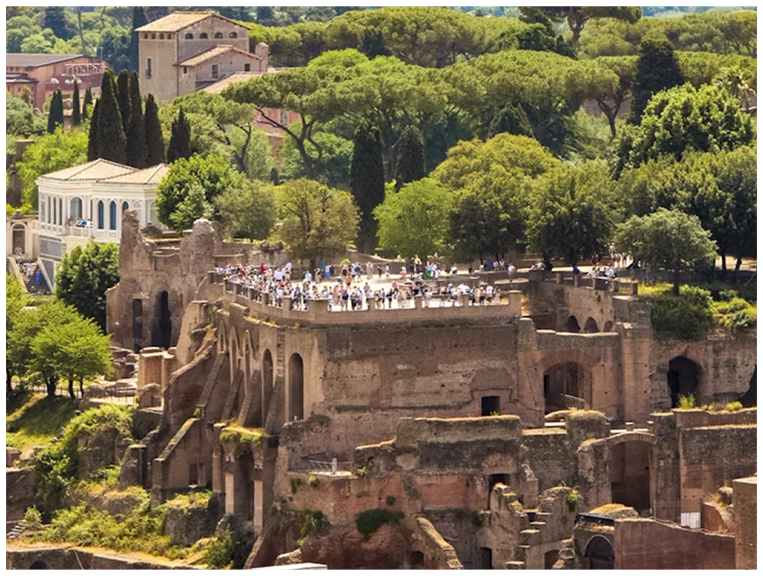
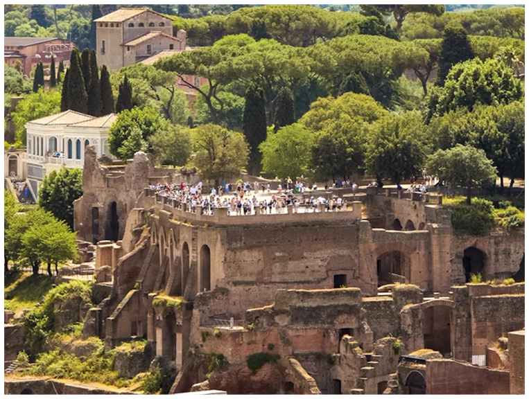

HOW IT WAS BUILT
Palatine Hill is the birthplace of Rome’s earliest settlements, inhabited since the 10th century BC. Tradition links this area to Romulus, who founded the city here in 753 BC.
During the Republican period, wealthy Romans built elegant houses overlooking the Forum. The transformation into a grand imperial complex began in the 1st century AD.
Augustus built his Domus Augusti and the Temple of Apollo, establishing the Palatine as the symbolic heart of imperial power.
In the Renaissance, families such as the Farnese created terraced gardens across the ruins, contributing new layers of history.